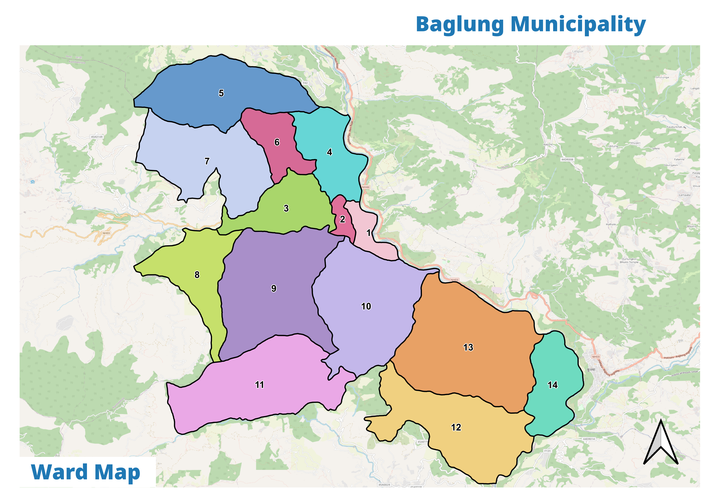

The planning canvas: 98 square kilometres of terraced hills and river bench, 14 wards and 56,102 people — the setting for a 15-year integrated urban development plan.
Baglung is the district capital of Baglung District in Gandaki Province, Nepal. It sits on a terrace above the Kali Gandaki river at roughly 83.53–83.68°E, 28.18–28.32°N, with terrain falling from ~2,600 m ridges to the river bench. The town is a traditional bazaar and a gateway to the Dhaulagiri region.
The historic bazaar and administrative core (wards 1–4, 13) hold 31,332 people — about 53% of the population on ~16% of the land. This is where most services, schools, hospitals and the district highway corridor concentrate.
Wards 5, 6, 7 and 14 (10,558 people) form the transition belt — a mix of approach villages and expanding suburban settlement.
Wards 8, 9, 10, 11 and 12 (14,212 people) climb into the hills. These are the fastest-emptying wards, with the highest deprivation, the oldest populations and the lowest literacy — and therefore the plan's first priority.

Ward populations from the Census 2021 ward tables, as corrected through the workbook audit. The core wards lead on size and density; the hills lead on ageing and deprivation.
| Ward | Population | Character | Zone |
|---|---|---|---|
| W-1 | 3,648 | Bazaar / administrative | Core |
| W-2 | 3,648 | Dense core, services | Core |
| W-3 | 9,829 | Largest ward, highway corridor | Core |
| W-4 | 6,144 | Growth axis (Odarchaur–Kudule) | Core |
| W-5 | 2,397 | Fringe transition | Fringe |
| W-6 | 3,221 | Fringe / farm | Fringe |
| W-7 | 1,875 | Smallest ward | Fringe |
| W-8 | 3,144 | Hill, high deprivation | Hill |
| W-9 | 2,739 | Hill, ageing | Hill |
| W-10 | 3,424 | Hill, peak deprivation | Hill |
| W-11 | 2,697 | Hill, fast decline | Hill |
| W-12 | 3,822 | Hill, ageing | Hill |
| W-13 | 7,981 | Core extension | Core |
| W-14 | 3,296 | Fringe / rural | Fringe |
An Integrated Urban Development Plan is a 15-year, three-phase municipal strategy, prepared under the national IUDP Guideline of NIURS. It reads every sector — demographic, social, physical, economic, environmental, financial and institutional — against national norms, projects demand, and distils it into an investment programme.
Immediate gaps and the first five-year agenda.
Consolidation, MSIP phasing and infrastructure-led growth.
Long-horizon vision: a resilient, service-rich Baglung.